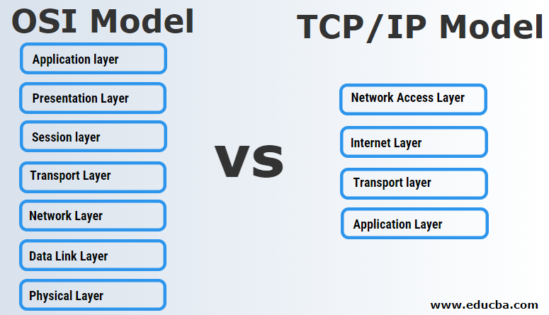

Az OSI (Open Systems Interconnection) modell egy elméleti keretrendszer, amelyet a számítógépes hálózatok működésének megértésére hoztak létre. Hét rétegre bontja a hálózati kommunikáció folyamatát, az alkalmazási rétegtől a fizikai rétegig. Segít a különböző gyártók eszközeinek és protokolljainak együttműködésében. Az OSI modell mellett a TCP/IP modell is elterjedt, amely egyszerűbb, de a gyakorlatban sokkal inkább használatos.
